-
Przed rozpoczęciem korzystania, musisz dostarczyć botowi informacji o tym jak chcesz żeby działał. W tym celu kliknij na ikonkę rozszerzenia (warto ją sobie przypiąć, dla łatwiejeszego dostępu). Następnie z menu wybierz ustawienia
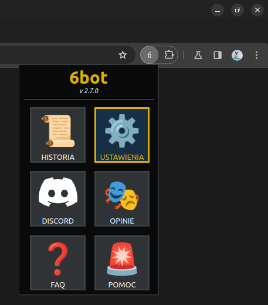 -
Wprowadź informacje o sobie. Tylko w ten sposób bot będzie mógł Cię należycie reprezentować i odpowiadać na pytania zgodnie z prawdą. Kliknij na "Informacje o Tobie" aby rozwinąć tę kategorię ustawień i wybierz swoją płeć oraz wpisz wiek. W następnym polu zatytuowanym "Zboczony/a" możesz określić, czy używasz portalu 6obcy w celu interakcji o charakterze seksualnym. W polu imię możesz wpisać swoje imię. Możesz też pozostawić je puste, a wtedy bot zapytany o twoje imię odmówi odpowiedzi.

-
Daj botowi znać z kim chcesz rozmawiać. Określ jaka płeć i zakres wiekowy (włącznie) Cię interesuje, oraz czy chcesz aby Twój rozmówca był otwarty lub niechętny do interakcji seksualnych. Jeśli nie masz mocno określonych preferencji, pierwsze i ostatnie pole możesz ustawić w pozycji neutralnej (suwak na środku). Wtedy bot będzie ignorował dane kryterium i nikogo przez nie nie zdyskfalifikuje.
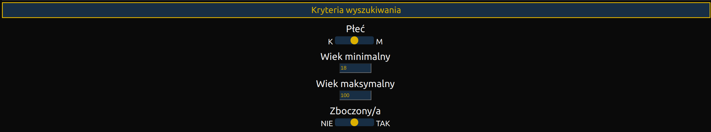 -
Określ w jaki sposób bot ma rozmawiać z innymi użytkownikami. Ta sekcja ustawień posiada najwięcej pól i jest najbardziej skomplikowana. Przejdźmy więc przez wszystkie po kolei.
Na samej górze zobaczyć możesz ikonkę "i". Po najechaniu na nią zobaczysz informacje o specjalnych wartościach, które możesz wstawić do wiadomości, a bot sam je zinterpretuje.
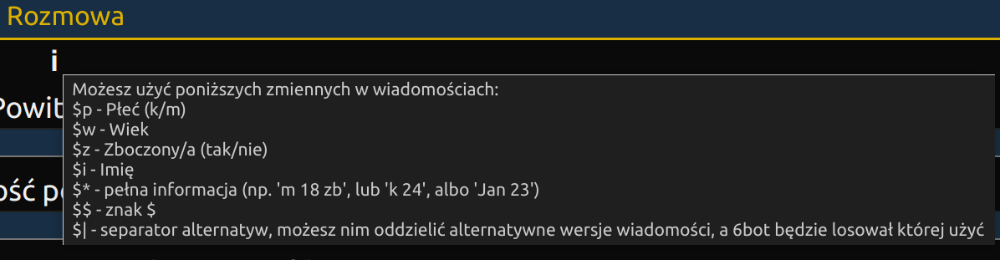
"Powitanie" to wiadomość wysyłana od razu po rozpoczęciu rozmowy. Najlepiej skorzystać tutaj z jednego z operatorów przedstawionych w poprzednim punkcie i zdefiniować wiele alternatywnych wiadomości (oddzielonych $|), tak jak w wartości domyślnej.
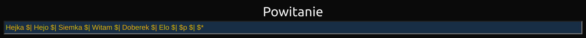
"Wiadomość po weryfikacji" to wiadomość, która zostanie wysłana od razu po stwierdzeniu przez bota, że rozmówca spełnia zdefiniowane przez Ciebie kryteria. Wiadomość ta zostanie wysłana zanim bot powiadomi Cię, że znalazł dla Ciebie rozmówcę, lub zanim zakończy rozmowę (patrz następne pole). Jeśli to pole pozostawisz puste, bot nie wyśle żadnej wiadomości na koniec.
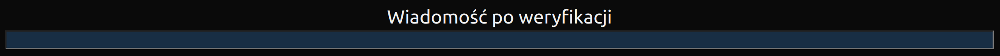
"Zakończ rozmowę nawet po udanej weryfikacji" to pole, które powstało z myślą o tych, którzy wolą prowadzić konwersacje na innej platformie. Jeśli zostanie ustawione na TAK, po upewnieniu się, że rozmówca spełnia Twoje oczekiwania, bot wyśle mu wiadomość określoną w poprzednim polu i zakończy rozmowę.
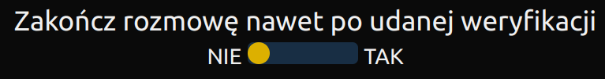
Jeśli ustawisz pole "Wysyłaj powód odrzucenia rozmówcy" na TAK, za każdym razem gdy rozmówca nie spełni zdefiniowanych oczekiwań, bot w ramach ostatniej wiadomości wyśle mu feedback z przyczyną odrzucenia (np. "nie interesuje mnie ta płeć"). Funkcja ta powinna być używana tylko w przypadku gdyby bot odrzucał kogoś nieprawidłowo, aby dowiedzieć się które kryterium nie działa poprawnie. Używanie tej funkcji może doprowadzić do shadow-bana, więc lepiej zostawić ją wyłączoną (ustawioną na NIE).
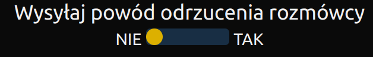
Pola "Opóźnienie między znakami" i "Czas reakcji" określają jak szybko bot ma pisać wiadomości. "Opóźnienie między znakami" daje możliwość regulowania samej prędkości pisania, a "Czas reakcji" to czas, który bot odczekuje przed rozpoczęciem pisania każdej wiadomości. Dla początkujących użytkowników polecam pozostawienie wartości domyślnych, ale później warto się tymi ustawieniami pobawić, żeby uzyskać bardziej naturalne dla siebie tempo pisania.
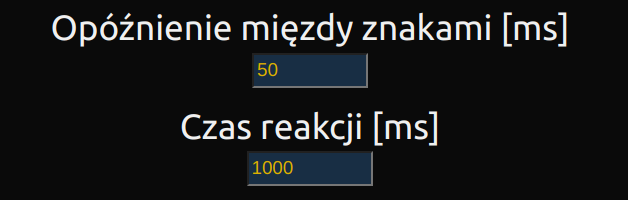
Używając portalu 6obcy czasem trafisz na ludzi, którzy rozpoczynają rozmowę i odchodzą od komputera nie kończąc jej. Pole "Maksymalny czas weryfikacji" chroni bota przed czekaniem w nieskończoność aż wrócą. Jeśli wstępna rozmowa zajmuje dłużej niż określony czas, bot kończy rozmowę.
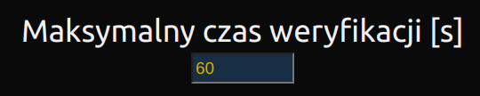
UWAGA: Minimalny dopuszczalny czas trwania rozmowy na 6obcy to 5 sekund. Ustawienie w tym polu wartości mniejszej niż 5 sprawi, że bot będzie działał nieprawidłowo. -
6bot jest wyposażony w mechanizm automatycznego rozwiązywania captchy. Proces ten jest jednak skomplikowany i bot czasem potrzebuje na to kilku, a nawet kilkunastu prób. W polu "Limit prób" w sekcji "Captcha" możesz określić po ilu próbach bot ma się poddać i powiadomić Cię o konieczności rozwiązania captchy ręcznie. Jeśli wpiszesz tu 0, bot nigdy się nie podda (co jest zalecane, bo zawsze prędzej czy później mu się udaje).
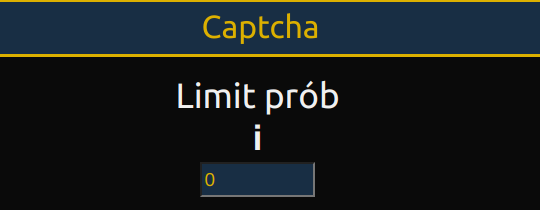 -
Bot jest również wypposażony w mechanizm zapisywania rozmów, aby można było później do nich wracać. W sekcji "Historia" możesz dopasoać jak długie rozmowy będą zapisywane, ile ma ich być maksymalnie w pamięci, a także po jakim czasie mają być automatycznie usuwane. Ostatnie 2 pola dotyczą tylko rozmów zapisanych automatycznie. Jeśli dodasz rozmowę do "Zapisanych", będzie ona w pamięci komputera aż ją usuniesz.
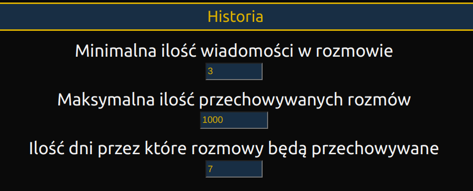 -
6bot stara się również odrzucać rozmówców rozsyłających SPAM. Posiada wbudowaną bazę wzorów i fraz wykorzystywaną przez SPAMerów, ale wykrywa także wykorzystanie fraz przypominających te z wbudowanej bazy. To jak bardzo podobne słowa ma wykrywać, możesz zdefiniować za pomocą ustawienia "Próg podobieństwa". Jest to jednak zalecane tylko dla zaawansowanych użytkowników.
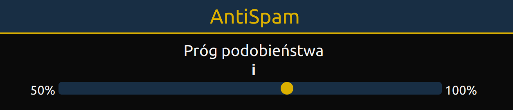 -
Wszystko gotowe! Teraz wystarczy, że wejdziesz na 6obcy i klikniesz na ikonkę głowy robota w lewym dolnym rogu, aby uruchomić bota.
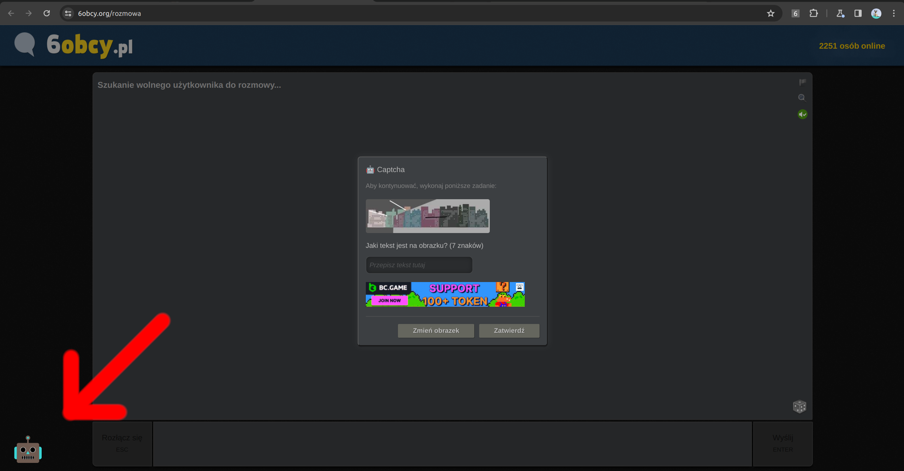Wygląd ikonki może się różnić w zależności od systemu operacyjnego.